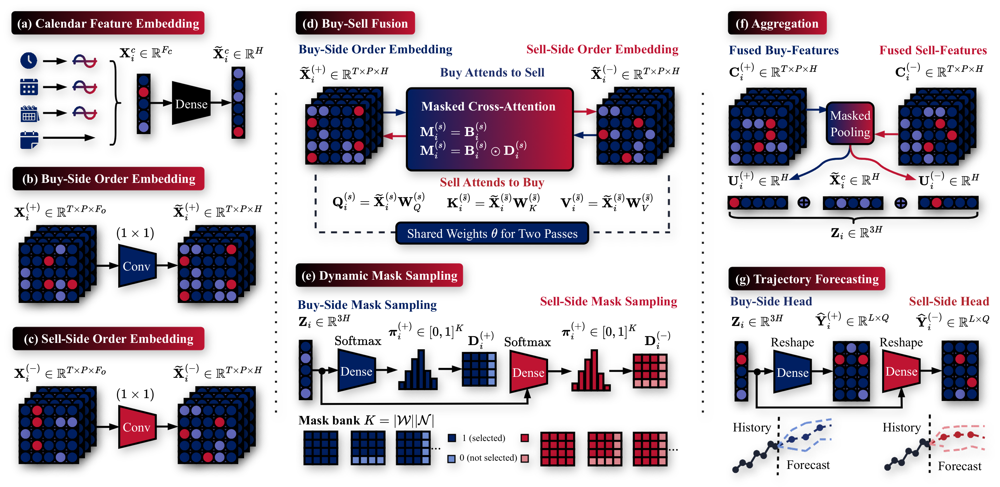
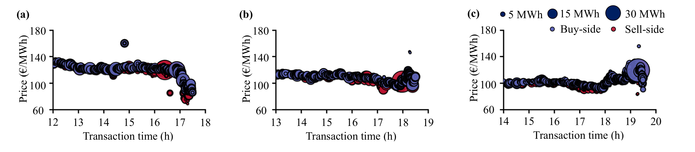
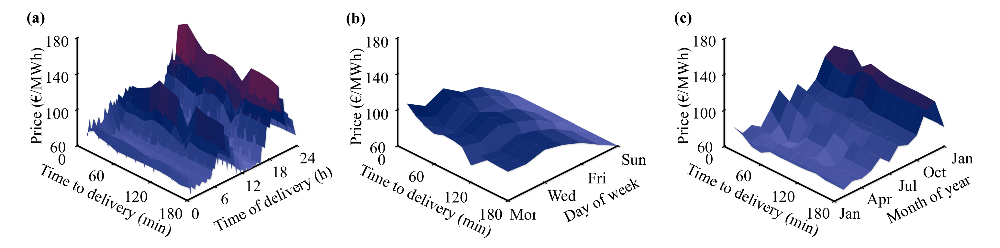

Overview



Features
Key feature comparison of OrderFusion and OrderFusion+.
| Feature | OrderFusion | OrderFusion+ |
|---|---|---|
| Input | Historical trades for the target product |
Trades for the target and neighboring products, and dummy features |
| Output | Price index (ID3 / ID2 / ID1) with uncertainty |
Buy-sell price trajectory with uncertainty |
| Adaptiveness | Fixed historical window, exhaustive tuning of the trade cutoff |
Dynamic historical window and neighboring products, no trade cutoff tuning |
Results
Testing performance of OrderFusion+ and the baselines. The testing is aggregated from the three folds, covering the full year 2024, and from the three forecasting origins of −180 min, −120 min, and −60 min. AQCE is reported in percentage (%). Lower values are better for AQL, AQCE, and MAE, while higher values are better for R². The best result is shown in bold, and the second-best is marked with underline.
| Model | AQL | AQCE | MAE | R² |
|---|
Forecasts
Micro-level buy-sell trajectories. Pick a delivery product and a forecasting origin, then add the models you want to compare. Each model gets its own figure. Every 15-minute forecasting interval is drawn as a bar: the vertical line spans the 0.1 to 0.9 quantiles and the dot marks the 0.5 quantile. All times are delivery start times.
Macro-level buy-sell indices. A single trajectory shows one product. To see how the market expectation moves as time goes by, from one delivery time to the next over a whole week, each product is summarized by one index per side: the mean VWAP over the forecasting window, and for the forecast the mean of each quantile over the same window. Following the indices along the delivery time shows whether a model tracks the daily price pattern, its turning points, and the spread between the buy and sell sides, and how wide its uncertainty is. The shaded bars span the 0.1 to 0.9 quantiles and the dark lines mark the 0.5 quantile.
The download is one compressed file with the forecasts of all models for the full test year 2024, together with the VWAP trajectories. The Python reader retrieves any forecast with one line and needs only NumPy.
from read_forecasts import Forecasts
f = Forecasts("orderfusion_forecasts_2024.npz")
f.get("OrderFusionPlus", "2024-07-23 18:00", origin=-180)Disclaimer. The forecasts and trajectories are “derived information” and not raw data from the commercial orderbook. They can only be used for research purpose and the usage must be approved by the authors of OrderFusion. The underlying orderbook data can be purchased from EPEX SPOT.
Cite
If you find our work useful or use our forecasts, please cite us.
OrderFusion+
Placeholder. The reference will be added once the paper is public.OrderFusion
@article{YU2026105131,
title = {OrderFusion: Encoding orderbook for end-to-end probabilistic intraday electricity price forecasting},
journal = {Advanced Engineering Informatics},
volume = {76},
pages = {105131},
year = {2026},
issn = {1474-0346},
doi = {https://doi.org/10.1016/j.aei.2026.105131},
url = {https://www.sciencedirect.com/science/article/pii/S1474034626008232},
author = {Runyao Yu and Yuchen Tao and Fabian Leimgruber and Tara Esterl and Jochen Stiasny and Derek W. Bunn and Qingsong Wen and Hongye Guo and Jochen L. Cremer},
}We will keep upgrading OrderFusion by adding more features. If you have ideas to improve OrderFusion and want to contribute, please contact ryu@london.edu. If you are interested in other market price forecasting and want to know more, please visit our website www.deepprior.com.